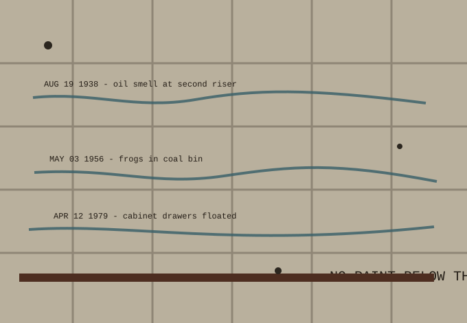

This wall is maintained as an instrument. It has outlasted three boilers, a coal chute, and the deputy clerk who wanted it painted pearl gray for morale.
Preservation rule: no paint below the brown strike line. Touch-up requests must include a hydrologic reason and two witnesses with dry socks.
The marks drain toward Outfall 17, but the flap gate keeps its own hours.